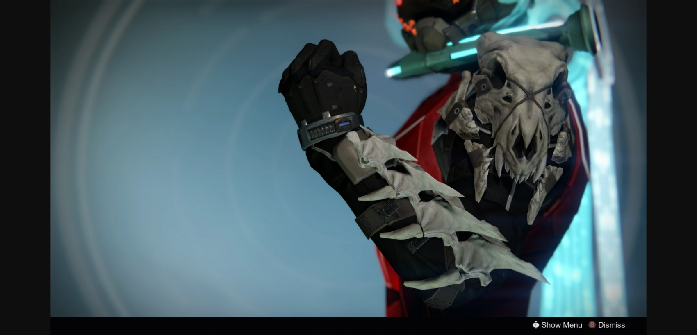

In this site I want to explore the use of audio in Destiny 2
the dialog and music sets the stage for a world you do not remember, and you have nothing to connect to that is familiar.
It is the opposite of the "Mirror stage" by Lacan(Note 1), the Ghost is the only thing we have to draw any conclusions of who we are.
Ghost resembles the symboloic, he is there to tell us of the new world which we reside in, although he does not tell us who we used to be.
Instead Ghost explains our purpose and what we must do to survive.
In the video Ghost explains all he had was a feeling when he chose to ressurect us, also in-game, it is known that the Guardian is controlled by the player.
A consequence of this knowledge, is an enemy in-game who wants to be real, these wish dragons have made armor that imply anytime, we the player, use that armor
we are closer to allowing these wish dragons a pathway to the real world. In a way this like "hailing us" a concept from Althusser (note 2).
 (note 3)
as you can see in the image, this is some of the magic armor that has the spirit of a wish dragon.
At first the armor looks like a pile of bones, but when taking the time to examine and read the story behind the armor, you quickly learn
that your actions can have consequences.
In some parts of the game you can hear the bones of the dragon talk to you, they try to convince you to make wishes to make them real.
The way we play destiny 2 and how we seek certain pleasures, learning who we are, and practicing certain skills in the early game before
needing them in late game is close to some of the theory discussed by Lindley (note 3)
(note 1): Jacques, Lacan The Mirror Stage (note 2): louis, Althusser "Ideology and Ideological State Apparatuses."
(note 3): Ernest, Lindley "A Study of Puzzles and Special Refrence to The Special Psychology of Mental Adaption".